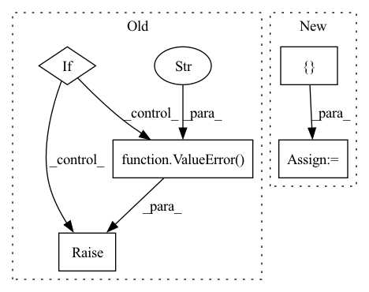

Pattern ID :3093
Before Change
// Pooling
// out: (BB, embedding_dim, NN)
if self._pooling_func_name == "max":
out = torch.max(out, -1, keepdim=True)[0]
elif self._pooling_func_name == "mean":
out = torch.mean(out, keepdim=True, dim=-1)
elif self._pooling_func_name == "sum":
out = torch.sum(out, keepdim=True, dim=-1)
else:
raise ValueError(f"Pooling function {self._pooling_func_name} is not yet supported!" )
// out: (BB, embedding_dim, 1)
out = torch.flatten(out, start_dim=-2)
After Change
// Pooling
// out: (BB, embedding_dim, NN)
masking_input = { "in_tensor": out.transpose(2, 1)}
if self.use_masking:
masking_input["mask_tensor"] = masking_tensor
out = self.pooling_block(masking_input)["masking_out"]
// output_tensor: (BB, embedding_dim)In pattern: SUPERPATTERN
Frequency: 3
Non-data size: 5
Instances Fragment ID: 10156442
Project Name: enlite-ai/maze
Commit Name: 53a9f4e4997b8a5451f14fb57dd6c5cb9becd110
Time: 2021-04-15
Author: office@enlite.ai
File Name: maze/perception/blocks/feed_forward/point_net.py
M Class Name: PointNetFeatureTransformNet
N Class Name: PointNetFeatureTransformNet
M Method Name: forward(3)
N Method Name: forward(2)
M Parent Class: nn.Module
N Parent Class: nn.Module
M File Name: maze/perception/blocks/feed_forward/point_net.py
N File Name: maze/perception/blocks/feed_forward/point_net.py
M Start Line: 93
M End Line: 127
N Start Line: 80
N End Line: 134
Before Change
batch, permutation_dim, -1
)
if self.combining_operation == "mean":
e = iid_embeddings.mean(dim=1)
elif self.combining_operation == "sum":
e = iid_embeddings.sum(dim=1)
else:
raise ValueError("combining_operation must be in ["sum", "mean"]." )
embedding = self.fc_subnet(e)
return embeddingAfter Change
// otherwise we need to loop over the batch to account for varying trial lengths
else:
combined_embedding = []
trial_counts = torch.zeros(batch, 1)
for i in range(batch):
// remove NaNs
valid_x = x[i, ~torch.isnan(x[i, :, 0]), :] Fragment ID: 10156430
Project Name: mackelab/sbi
Commit Name: 1352e77bdbc47aa4a4130679903b57672e48218c
Time: 2023-03-01
Author: jan.boelts@tum.de
File Name: sbi/neural_nets/embedding_nets.py
M Class Name: PermutationInvariantEmbedding
N Class Name: PermutationInvariantEmbedding
M Method Name: forward(2)
N Method Name: forward(2)
M Parent Class: nn.Module
N Parent Class: nn.Module
M File Name: sbi/neural_nets/embedding_nets.py
N File Name: sbi/neural_nets/embedding_nets.py
M Start Line: 271
M End Line: 284
N Start Line: 277
N End Line: 304
Before Change
"If use_lma is specified, q_chunk_size and kv_chunk_size must "
"be provided"
)
if (use_memory_efficient_kernel and use_lma):
raise ValueError(
"Choose one of use_memory_efficient_kernel and use_lma"
)
// [*, H, Q/K, C_hidden]
q, k, v = self._prep_qkv(q_x, kv_x)
After Change
"use flash_mask instead"
)
attn_options = [ use_memory_efficient_kernel, use_lma, use_flash Fragment ID: 10156438
Project Name: aqlaboratory/openfold
Commit Name: 4f53624d92b28c56c5479c20f262f63b4eaeec68
Time: 2022-07-08
Author: gahdritz@gmail.com
File Name: openfold/model/primitives.py
M Class Name: Attention
N Class Name: Attention
M Method Name: forward(10)
N Method Name: forward(8)
M Parent Class: nn.Module
N Parent Class: nn.Module
M File Name: openfold/model/primitives.py
N File Name: openfold/model/primitives.py
M Start Line: 439
M End Line: 469
N Start Line: 415
N End Line: 486